Tareas manuales
Actividades repetitivas que consumen tiempo y recursos operativos.

HablemosAyudamos a MYPEs y pequeñas empresas a organizar sus procesos, digitalizar sus operaciones, automatizar tareas y desarrollar capacidades para crecer de manera ordenada.
Cuando una empresa crece, también aumentan las tareas, la información, los clientes y las responsabilidades. Sin procesos adecuados, ese crecimiento puede generar desorden y trabajo innecesario.
Actividades repetitivas que consumen tiempo y recursos operativos.
Datos distribuidos entre archivos, mensajes, correos y distintas herramientas.
Diferentes personas realizan una misma actividad de diferentes maneras.
Sistemas que funcionan de manera independiente y requieren trabajo manual para intercambiar datos.
Dificultad para visualizar información útil para gestionar la operación.
Procesos que dependen demasiado del conocimiento de determinadas personas.
No todas las empresas necesitan lo mismo. Por eso trabajamos diferentes áreas que pueden abordarse individualmente o como parte de un proyecto integral.
Analizamos cómo funciona actualmente una empresa para identificar oportunidades de mejora, simplificación y estandarización.
Diseñamos flujos para reducir tareas repetitivas y conectar herramientas cuando la operación lo necesita.
Organizamos procesos e información mediante herramientas digitales y sistemas adecuados a las necesidades de cada empresa.
Acompañamos a los equipos en la adopción de herramientas y nuevas formas de trabajo.
Entendemos la situación actual, identificamos oportunidades y diseñamos una solución acorde a las necesidades de la empresa.
Entender cómo funciona actualmente.
Identificar problemas y oportunidades.
Diseñar una nueva forma de trabajar.
Implementar las soluciones.
Primero entendemos el problema. Después buscamos simplificar la forma de trabajar y finalmente utilizamos tecnología cuando realmente aporta valor.
Somos Fabrizio Carreño y Mario Martínez. Nuestro enfoque se encuentra en la intersección entre procesos, tecnología y desarrollo empresarial.
Buscamos que las herramientas digitales tengan un propósito concreto: ayudar a las empresas a trabajar de manera más organizada y eficiente.
Conocer más sobre nosotros →